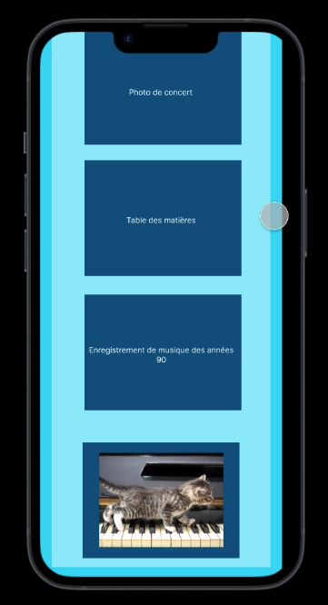

Le but de cette SAE était de se familiariser avec la conduite de projet. Pour cela, nous devions répondre aux besoins d'un client qui souhaite un site web.
Le projet est divisé en 2 parties ;
La première consiste à faire un questionnaire pour interviewer le client, lui demander le plus de précision possible. La deuxième partie sera la présentation des besoins, c'est-à-dire le compte-rendu de l'entretien avec une maquette du site web. La maquette possède une version mobile et une version PC.
Cette SAE était intéressante dans la mesure où elle nous mettait vraiment dans des conditions professionnelles. J'ai pu apprendre à travailler en équipe, c'est quelque chose d'efficace car on coupe le travail en plusieurs parties et le projet va nettement plus vite.
La SAE 1.05 a permis d'appréhender les besoins d'un client. C'était une première expérience qui a servis de base pour des projets futurs.
Démonstration vidéo du jeux.